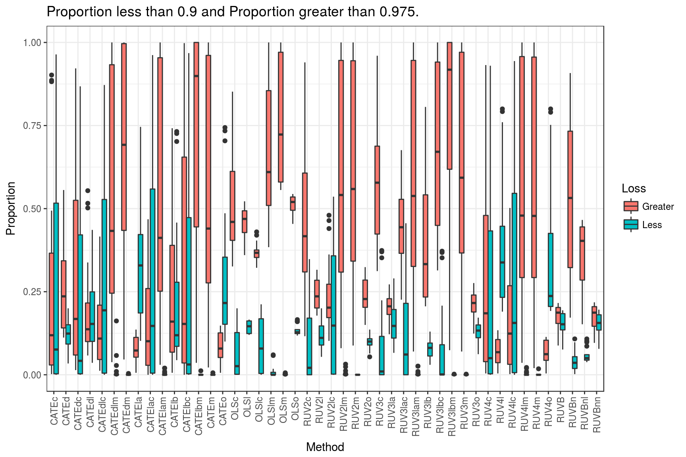
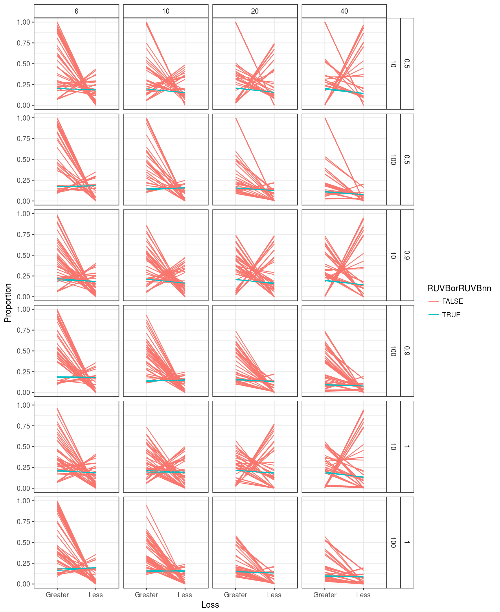

Coverage Try 2
David Gerard
April 28, 2017
Abstract
This is my second try at the coverage problem. Recall here, I plotted the full boxplots of all of the coverage and calculated the median covarage. Here, I look at different loss functions.
Read in data
library(tidyverse)## Loading tidyverse: ggplot2
## Loading tidyverse: tibble
## Loading tidyverse: tidyr
## Loading tidyverse: readr
## Loading tidyverse: purrr
## Loading tidyverse: dplyr## Conflicts with tidy packages ----------------------------------------------## filter(): dplyr, stats
## lag(): dplyr, statslibrary(stringr)
covdat <- read_csv(file = "../../reproduce_ruv3/Output/sims_out/cov_mat2.csv")## Parsed with column specification:
## cols(
## .default = col_double(),
## current_seed = col_integer(),
## Nsamp = col_integer(),
## ncontrols = col_integer(),
## poisthin = col_logical()
## )## See spec(...) for full column specifications.left_vals <- toupper(str_replace(str_extract(names(covdat)[-(1:5)], "^.+_"), "_", ""))
right_vals <- str_replace(str_extract(names(covdat)[-(1:5)], "_.+$"), "_", "")
name_vec <- c("Seed", "Pi0", "SampleSize", "NControls", "Poisthin",
paste0(left_vals, right_vals))
name_vec[(length(name_vec) - 3):length(name_vec)] <-
paste0("RUVB", stringr::str_replace(string = names(covdat)[(length(name_vec) - 3):length(name_vec)],
pattern = "(ruvb)(.*+)", replace = "\\2"))
names(covdat) <- name_vec
covdat <- select(covdat, -Seed, -Poisthin)
longdat <- gather(data = covdat, key = "Method", value = "Coverage", -(1:3))Calculate losses on the data.
less9 <- function(x) {
s1 <- mean(x < 0.9)
}
g0975 <- function(x) {
s2 <- mean(x > 0.975)
}
sumdat <- longdat %>% group_by(Pi0, SampleSize, NControls, Method) %>%
summarise(Less = less9(Coverage), Greater = g0975(Coverage)) %>%
ungroup() %>%
mutate(Loss = Less + Greater)Simple boxplot of results
ggplot(data = sumdat, mapping = aes(x = Method, y = Loss)) +
geom_boxplot() +
theme_bw() + theme(axis.text.x = element_text(angle = 90, hjust = 1, vjust = 0.5)) +
theme(strip.background = element_rect(fill="white")) +
ggtitle("Losses across all scenarios (sum < 0.9 and > 0.975)")ggplot(data = sumdat, mapping = aes(x = Method, y = Less)) +
geom_boxplot() +
theme_bw() + theme(axis.text.x = element_text(angle = 90, hjust = 1, vjust = 0.5)) +
theme(strip.background = element_rect(fill="white")) +
ggtitle("Proportion less than 0.9 across all scenarios")ggplot(data = sumdat, mapping = aes(x = Method, y = Greater)) +
geom_boxplot() +
theme_bw() + theme(axis.text.x = element_text(angle = 90, hjust = 1, vjust = 0.5)) +
theme(strip.background = element_rect(fill="white")) +
ggtitle("Proportion Greater than 0.975 across all scenarios")
Note that RUVB and RUVBnn have the best mean loss, but not the best mean Less(0.9) or the best mean Greater(0.975).
meanlossdat <- sumdat %>% group_by(Method) %>%
summarise(meanLoss = mean(Loss), meanLess = mean(Less), meanGreater = mean(Greater))
meanlossdat$Method[order(meanlossdat$meanLoss, decreasing = FALSE)]## [1] "RUVB" "RUVBnn" "RUV2o" "RUV3o" "RUV2l" "RUV3la" "CATEo"
## [8] "CATEd" "CATEdl" "CATEla" "RUV4o" "RUVBnl" "RUV2lc" "CATEdlc"
## [15] "RUV4l" "OLSlc" "CATElac" "RUV4lc" "RUV3lb" "CATElb" "CATElam"
## [22] "CATEm" "CATEc" "CATEdlm" "CATEdc" "RUV4m" "RUV4c" "RUV4lm"
## [29] "RUV2c" "RUV3lac" "RUVBn" "RUV2lm" "OLSc" "RUV3lam" "RUV2m"
## [36] "OLSl" "CATElbc" "RUV3m" "OLSo" "RUV3c" "CATEdm" "OLSlm"
## [43] "CATElbm" "RUV3lbc" "OLSm" "RUV3lbm"meanlossdat$Method[order(meanlossdat$meanLess, decreasing = FALSE)]## [1] "RUV2m" "RUV3lbm" "RUV3m" "CATEdm" "CATEm" "CATElbm" "OLSm"
## [8] "RUV4m" "CATElam" "RUV4lm" "RUV3lam" "RUV2lm" "OLSlm" "CATEdlm"
## [15] "RUVBn" "RUVBnl" "OLSc" "RUV3lb" "RUV3lbc" "RUV3c" "OLSlc"
## [22] "RUV2c" "RUV2o" "RUV2l" "CATEd" "RUV3o" "RUV3lac" "OLSo"
## [29] "OLSl" "RUVB" "RUVBnn" "RUV3la" "CATEdl" "RUV2lc" "CATElb"
## [36] "CATEdc" "RUV4c" "CATElbc" "CATEc" "CATEo" "CATEdlc" "RUV4lc"
## [43] "CATElac" "CATEla" "RUV4o" "RUV4l"meanlossdat$Method[order(meanlossdat$meanGreater, decreasing = FALSE)]## [1] "RUV4o" "RUV4l" "CATEla" "CATEo" "CATEdlc" "CATElac" "RUV4lc"
## [8] "RUVB" "RUVBnn" "CATEdl" "RUV3la" "RUV3o" "RUV2lc" "RUV2o"
## [15] "RUV2l" "CATEc" "CATEd" "CATElb" "RUV4c" "CATEdc" "CATElbc"
## [22] "RUVBnl" "OLSlc" "RUV3lb" "RUV3lac" "OLSl" "RUV2c" "OLSo"
## [29] "CATElam" "OLSc" "CATEm" "CATEdlm" "RUVBn" "RUV4m" "RUV4lm"
## [36] "RUV2lm" "RUV3lam" "RUV3c" "RUV2m" "RUV3m" "OLSlm" "CATEdm"
## [43] "RUV3lbc" "CATElbm" "OLSm" "RUV3lbm"Try to combine the Less and Greater plots
combdat <- select(sumdat, Pi0, SampleSize, NControls, Method, Less, Greater) %>%
gather(key = "Loss", value = "Proportion", Less, Greater)
ggplot(data = combdat, mapping = aes(x = Method, y = Proportion, fill = Loss)) +
geom_boxplot() +
theme_bw() + theme(axis.text.x = element_text(angle = 90, hjust = 1, vjust = 0.5)) +
theme(strip.background = element_rect(fill="white")) +
ggtitle("Proportion less than 0.9 and Proportion greater than 0.975.")
Most of the methods perform significantly better on the “Less” criterion than the “Greater” criterion, but there are some methods where this is reveresed — CATEo and CATEla. RUVB and RUVBnn perform about the same under both scenarios.
Connect dots for easier viewing. There is no method that has both a lower mean Greater loss and a lower mean Less loss.
tempdat <- combdat %>% group_by(Method, Loss) %>%
summarise(meanloss = mean(Proportion))
tempdat$RUVBorRUVBnn <- tempdat$Method == "RUVB" | tempdat$Method == "RUVBnn"
ggplot(data = tempdat, mapping = aes(x = Loss, y = meanloss, group = Method, color = RUVBorRUVBnn)) +
geom_line() +
theme_bw()Repeat with by scenario rather than averaging over scenario.
combdat$RUVBorRUVBnn <- combdat$Method == "RUVB" | combdat$Method == "RUVBnn"
factor_vec <- rep("other", length = nrow(combdat))
factor_vec[stringr::str_detect(combdat$Method, "c$")] <- "c"
factor_vec[stringr::str_detect(combdat$Method, "m$")] <- "m"
factor_vec[combdat$Method == "RUVB" | combdat$Method == "RUVBnn"] <- "RUVB"
combdat$categories <- as.factor(factor_vec)
ggplot(data = combdat, mapping = aes(x = Loss, y = Proportion, group = Method, color = RUVBorRUVBnn)) +
geom_line() +
facet_grid(Pi0 + NControls ~ SampleSize) +
theme_bw() +
theme(strip.background = element_rect(fill="white")) 
ggplot(data = combdat, mapping = aes(x = Loss, y = Proportion, group = Method, color = factor_vec)) +
geom_line() +
facet_grid(Pi0 + NControls ~ SampleSize) +
theme_bw() +
theme(strip.background = element_rect(fill="white")) Summary
- RUVB and RUVBnn perform best under large sample sizes when there are few control genes. But it seems to perform about the same under every scenario.
- RUVB and RUVBnn have equal losses for the less than 0.9 and the greater than 0.975 criteria. No other method has equal losses here.
- Using this criteria, other methods do seem to have better coverage for many of the scenarios, but they are not the same methods for all scenarios (see boxplots).
- Using this criteron, RUVB seems to be the best method when there are few control genes and the proportion of null genes is 0.5.
- “m” methods are very very conservative when Pi0 = 0.5 and are very anti-conservative when pi0 = 1. They perform very very well when Pi0 = 0.9.
- “c” methods perform very pooorly when m = 10 or when n is small. They tend to be too conservative.
sessionInfo()## R version 3.3.2 (2016-10-31)
## Platform: x86_64-pc-linux-gnu (64-bit)
## Running under: Ubuntu 16.04.2 LTS
##
## locale:
## [1] LC_CTYPE=en_US.UTF-8 LC_NUMERIC=C
## [3] LC_TIME=en_US.UTF-8 LC_COLLATE=en_US.UTF-8
## [5] LC_MONETARY=en_US.UTF-8 LC_MESSAGES=en_US.UTF-8
## [7] LC_PAPER=en_US.UTF-8 LC_NAME=C
## [9] LC_ADDRESS=C LC_TELEPHONE=C
## [11] LC_MEASUREMENT=en_US.UTF-8 LC_IDENTIFICATION=C
##
## attached base packages:
## [1] stats graphics grDevices utils datasets methods base
##
## other attached packages:
## [1] stringr_1.2.0 dplyr_0.5.0 purrr_0.2.2 readr_1.0.0
## [5] tidyr_0.6.1 tibble_1.2 ggplot2_2.2.1 tidyverse_1.1.1
##
## loaded via a namespace (and not attached):
## [1] Rcpp_0.12.10 plyr_1.8.4 forcats_0.2.0 tools_3.3.2
## [5] digest_0.6.12 jsonlite_1.3 lubridate_1.6.0 evaluate_0.10
## [9] nlme_3.1-131 gtable_0.2.0 lattice_0.20-34 psych_1.6.12
## [13] DBI_0.6 yaml_2.1.14 parallel_3.3.2 haven_1.0.0
## [17] xml2_1.1.1 httr_1.2.1 knitr_1.15.1 hms_0.3
## [21] rprojroot_1.2 grid_3.3.2 R6_2.2.0 readxl_0.1.1
## [25] foreign_0.8-67 rmarkdown_1.3 modelr_0.1.0 reshape2_1.4.2
## [29] magrittr_1.5 backports_1.0.5 scales_0.4.1 htmltools_0.3.5
## [33] rvest_0.3.2 assertthat_0.2.0 mnormt_1.5-5 colorspace_1.3-2
## [37] labeling_0.3 stringi_1.1.2 lazyeval_0.2.0 munsell_0.4.3
## [41] broom_0.4.2This site was created with R Markdown